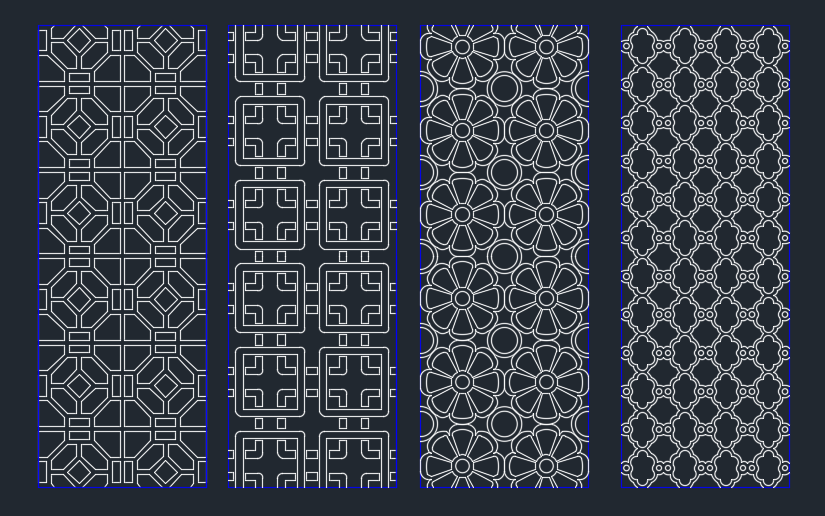
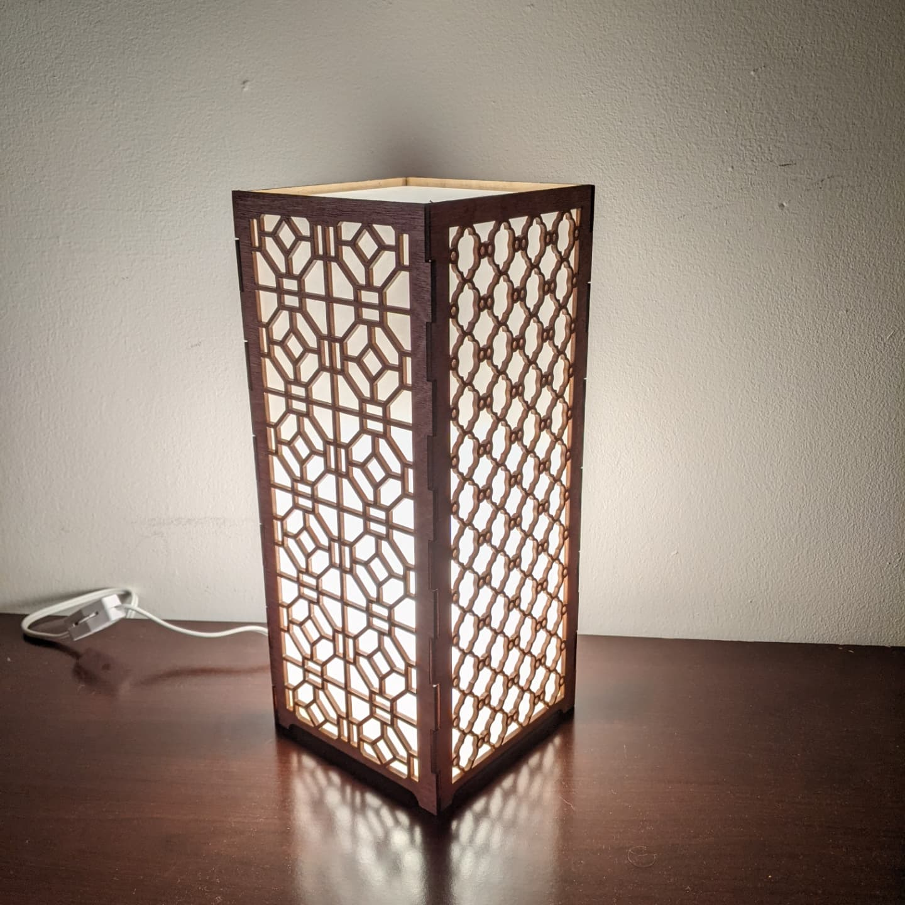
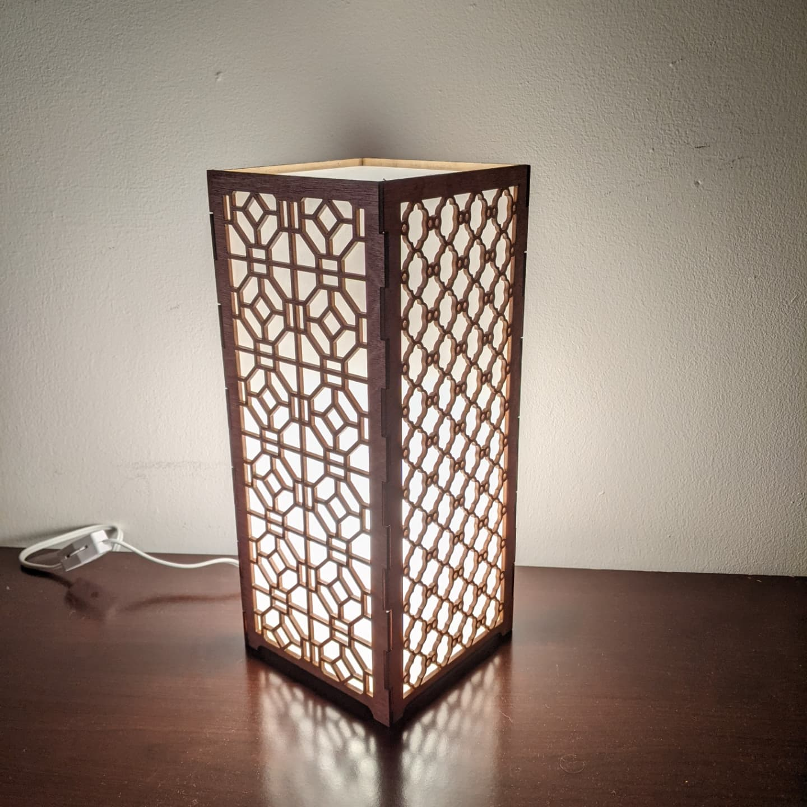

|
My desk at home was feeling dark and needed a light. I had always wanted to build a lamp and this was
perfect opportunity.
Inspired by the Japanese paper and wood room dividers I wanted to build something in that style.
I then created some patterns in AutoCAD I thought could work.

I tested all the patterns for the one I liked the most but ended up picking two patterns and using both.
This gave the final piece some nice wall shadows.
 I cut the basic design out of foam board first to make sure everything looked good and fit together.
I cut the basic design out of foam board first to make sure everything looked good and fit together.
 I now needed to cut the final pieces out of 1/8" plywood and stain them. The key part to this lamp would
be the light defusion
through the holes. I cut some thin clear acrylic and sanded it using 300 grit sand paper to make it
translucent. This gave the acrylic a nice
faded look which was exactly what I was looking for. Below is the final result.

I now needed to cut the final pieces out of 1/8" plywood and stain them. The key part to this lamp would
be the light defusion
through the holes. I cut some thin clear acrylic and sanded it using 300 grit sand paper to make it
translucent. This gave the acrylic a nice
faded look which was exactly what I was looking for. Below is the final result.

|
|